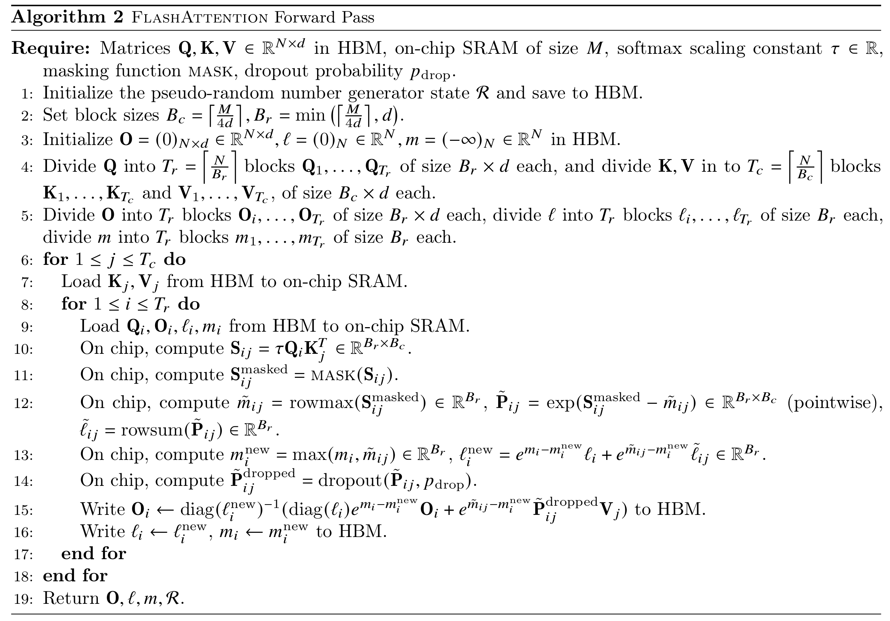

import math
import torch10.2 FlashAttention-1：消除 IO
在 10.1 里，我们介绍了标准 Attention 其实是一个 IO-bound 的算法。它的慢并不在算，而是慢在把中间的 \(S\) 和 \(P\) 这两个 \(N \times N\) 的大矩阵写到 HBM 上，再读回来。真正的瓶颈是搬运一整个注意力矩阵，而不是两次 GEMM 本身。
FlashAttention-1 的前向传播，本质上就做一件事：不再向 HBM 存入中间矩阵 \(S=QK^\top\) 和 \(P=\text{softmax}(S)\)，而是在一个 fused kernel 里边算边 softmax 边乘 \(V\)，并且只在片上（SRAM / Register）维护 softmax 需要的少量统计量，从而消除 IO。
简单理解就是，标准 Attention 需要先把整张试卷写出来（\(S\)），再统一批改（softmax 得到 \(P\)），最后再拿 \(P\) 计算总得分。而 FlashAttention-1 则是一边写卷子一边算分一边汇总，最终只交卷（\(O\)），而中间的草稿不出片上。
那么，它是怎么做到的呢？
10.2.1 从标准 Attention 到 Online Softmax
我们先把单头 Attention 的公式写出来（这里忽略缩放）：
\[ S = QK^\top, \quad P = \mathrm{softmax}(S), \quad O = PV \]
它们的形状分别是：
\[ Q, K, V \in \mathbb{R}^{N \times d}, \quad S \in \mathbb{R}^{N \times N}, \quad P \in \mathbb{R}^{N \times N}, \quad O \in \mathbb{R}^{N \times d} \]
对第 \(i\) 个 query 和第 \(j\) 个 key 和 value，标准 softmax 是：
\[ S_{ij} = Q_i K_j^\top, \quad P_{ij} = \frac{\exp(S_{i})}{\sum_j \exp(S_{ij})}, \quad O_i = P_{ij} V_j \]
实际上，为了数值稳定，我们总是用“减去最大值”的稳定版本。这个版本可以保证在计算 softmax 的时候不会因为指数函数的存在而导致数值溢出：
\[ P_i = \frac{\exp(S_i - m_i)}{\sum_j \exp(S_{ij} - m_i)}, \quad m_i = \max_j S_{ij} \]
这里的难点在于，如果我们想得到 \(O_i\)，就似乎得先得到整行 \(P_i\)；而要得到 \(P_i\)，又似乎得先有整行 \(S_i\)。也就是说，我们必须先把整行 \(S\) 写出来，才能算出整行 \(P\)，进而算出整行 \(O\)。这就导致我们不得不把 \(S\) 和 \(P\) 写到 HBM。
那么，既然我们没办法完整存下 \(S\) 和 \(P\)，我们能不能也像矩阵乘法那样，按行分块计算呢？也就是说，我们能不能在扫描 \(S\) 的时候，边计算 \(m_i\) 和 \(l_i = \sum_j \exp(S_{ij} - m_i)\)，边计算 \(O_i\) 呢？
如果我们这样做的话，我们就会遇到一个问题：
- 当我们在扫描 \(S\) 的时候，我们需要维护一个当前行的最大值 \(m_i\)，但是这个 \(m_i\) 是随着我们的扫描不断更新的；
- 同样地，我们需要维护一个当前行的归一化累积量 \(l_i\)，但是这个 \(l_i\) 也是随着 \(m_i\) 的更新而不断变化的；
- 当我们在扫描 \(S\) 的时候，我们需要维护一个当前行的输出向量 \(O_i\)，但是这个 \(O_i\) 是基于之前的 \(m_i\) 和 \(l_i\) 计算的，而现在 \(m_i\) 和 \(l_i\) 都变了，所以我们需要想一个办法来修正之前累积的 \(O_i\)。
如果我们解决了这个问题，那么我们需要的只是每一行的两个标量统计量 \(m_i\) 和 \(l_i\)，它们的大小是 \(O(1)\)；输出向量 \(O_i\)，它的大小是 \(O(d)\)。它们所需要的空间远小于 \(O(N^2)\) 的 \(S\) 和 \(P\)。
这就是 FlashAttention-1 的核心贡献之一：作者给出了数值稳定的 online softmax 重标定公式，使得我们可以在按块扫描 \(S\) 时，正确维护每行的 \(m_i, l_i\) 以及 \(O_i\)，从而无需显式存下 \(S\) 和 \(P\)。
10.2.2 Online Softmax 的重标定
现在我们把 online softmax 写得更具体一点。首先我们对 \(Q\) 按行分成 \(T_r\) 个块，每个块的大小是 \(B_r \times d\)；对 \(K\) 和 \(V\) 按列分成 \(T_c\) 个块，每个块的大小是 \(B_c \times d\)。对于第 \(i\) 个 query 块和第 \(j\) 个 key 和 value 块，我们有：
- \(m_i \in \mathbb{R}^{B_r \times 1}\)：到目前为止的行最大值
- \(l_i \in \mathbb{R}^{B_r \times 1}\)：到目前为止的归一化累积量
- \(O_i \in \mathbb{R}^{B_r \times d}\)：到目前为止的输出向量
- 新块里计算出的 attention 分数：\(S_{ij} \in \mathbb{R}^{B_r \times B_c}\)
- 新块里计算出的局部最大值：\(\tilde{m}_{ij} = \mathrm{rowmax}(S_{ij}) \in \mathbb{R}^{B_r \times 1}\)
- 新块里计算出的 softmax：\(P_{ij} = \exp(S_{ij} - \tilde{m}_{ij}) \in \mathbb{R}^{B_r \times B_c}\)
- 新块里的局部归一化累积量：\(\tilde{l}_{ij} = \mathrm{rowsum}(P_{ij}) \in \mathbb{R}^{B_r \times 1}\)
但问题是，旧的 \(O_i\) 是在旧的 \(m_i\) 下计算的，而新的 \(\tilde{O}_i\) 是在新的 \(\tilde{m}_i\) 下计算的。要把它们加起来，必须把它们搬到同一个标尺，否则就无法正确地累积。
令新的全局最大值：
\[ m_i' = \max(m_i, \tilde{m}_{ij}) \]
旧的部分需要乘一个缩放因子 \(\alpha = \exp(m_i - m_i')\)，新的部分需要乘一个缩放因子 \(\beta = \exp(\tilde{m}_{ij} - m_i')\)。于是我们可以更新：
\[ l_i' = \alpha l_i + \beta \tilde{l}_{ij} \] \[ P_{ij} = \exp(S_{ij} - \tilde{m}_{ij}) \]
最后，在这一行所有块都扫描完后，输出就是：
\[ O_i = \frac{\alpha O_i + \beta P_{ij} V_j}{l_i'} \]
这就是 FlashAttention-1 前向传播里最关键的一步：每处理一个块，就做一次“最大值更新 + 重标定 + 累积”。通过流式处理，我们就不需要把整个 \(S\) 和 \(P\) 写到 HBM 上了，而只需要在片上维护 \(m_i\)、\(l_i\) 和 \(o_i\) 这几个统计量，最终输出 \(O\)。这样就减少了不必要的 IO，达到了加速的目的。
10.2.3 FlashAttention-1 的前向传播实现
下面是 FlashAttention-1 前向传播的伪代码，流程和我们上面描述的一样：

接下来我们来实现一下：
def flash_attention_forward(
Q: torch.Tensor,
K: torch.Tensor,
V: torch.Tensor,
Br: int,
Bc: int,
*,
causal: bool = False,
scale: float | None = None,
dropout: float = 0.0,
upcast: bool = True,
) -> torch.Tensor:
"""
Educational FlashAttention-1 forward that matches Algorithm 1 (tiled, online softmax).
Args:
Q, K, V: [N, d] (single head). (Batch/head dims can be folded outside.)
Br: row block size (Q/O block)
Bc: col block size (K/V block)
causal: whether to apply causal mask (i attends to <= i)
scale: optional scale factor (e.g., 1/sqrt(d)). If None, defaults to 1/sqrt(d).
upcast: if True, do accumulations in float32 for numerical stability.
Returns:
O: [N, d]
"""
N, d = Q.shape
original_dtype = Q.dtype
assert Q.ndim == K.ndim == V.ndim == 2
assert K.shape == (N, d) and V.shape == (N, d)
dtype = (
torch.float32
if (upcast and Q.dtype in (torch.float16, torch.bfloat16))
else Q.dtype
)
Q = Q.to(dtype=dtype)
K = K.to(dtype=dtype)
V = V.to(dtype=dtype)
if scale is None:
scale = 1.0 / math.sqrt(d)
# line 3: initialize O, l, m in HBM
O = torch.zeros(N, d, dtype=dtype, device=Q.device)
l = torch.zeros(N, dtype=dtype, device=Q.device)
m = torch.full((N,), -math.inf, dtype=dtype, device=Q.device)
# Split counts
Tr = math.ceil(N / Br)
Tc = math.ceil(N / Bc)
# line 6: for j in [1..Tc]
for j in range(Tc):
k_start = j * Bc
k_end = min((j + 1) * Bc, N)
# line 7: read K_j, V_j from HBM
Kj = K[k_start:k_end]
Vj = V[k_start:k_end]
# line 8: for i in [1..Tr]
for i in range(Tr):
q_start = i * Br
q_end = min((i + 1) * Br, N)
# line 9: read Q_i, O_i, l_i, m_i from HBM
Qi = Q[q_start:q_end]
Oi = O[q_start:q_end]
li = l[q_start:q_end]
mi = m[q_start:q_end]
# line 10: S_ij = tau * Q_i K_j^T
Sij = (Qi @ Kj.T) * scale
# Optional causal mask: positions in Qi correspond to global indices [q_start..q_end)
# keys correspond to [k_start..k_end)
if causal:
q_idx = torch.arange(q_start, q_end, device=Q.device)
q_idx = q_idx.unsqueeze(1)
k_idx = torch.arange(k_start, k_end, device=Q.device)
k_idx = k_idx.unsqueeze(0)
# line 11: mask where key position > query position
Sij = Sij.masked_fill(k_idx > q_idx, -math.inf)
# line 12: m̃_ij = rowmax(S_ij), P̃_ij = exp(S_ij - m̃_ij), l̃_ij = rowsum(P̃_ij)
mij_tilde = Sij.max(1).values
Pij_tilde = (Sij - mij_tilde.unsqueeze(1)).exp()
lij_tilde = Pij_tilde.sum(1)
# line 13: m_new = max(m_i, m̃_ij)
mi_new = mi.maximum(mij_tilde)
# l_new = exp(m_i - m_new)*l_i + exp(m̃_ij - m_new)*l̃_ij
alpha = (mi - mi_new).exp()
beta = (mij_tilde - mi_new).exp()
li_new = alpha * li + beta * lij_tilde
if dropout > 0.0:
# line 14: (optional) dropout on P̃_ij before using it in O_i update
mask = torch.rand_like(Pij_tilde) > dropout
Pij_tilde = Pij_tilde * mask / (1.0 - dropout)
# line 15:
# O_i <- diag(l_new)^(-1) * ( diag(l_i)*exp(m_i-m_new)*O_i + exp(m̃_ij-m_new) * P̃_ij V_j )
# Note: diag(...) is just per-row scaling -> broadcasting.
Oi_new = (
(alpha.unsqueeze(1) * li.unsqueeze(1) * Oi)
+ beta.unsqueeze(1) * (Pij_tilde @ Vj)
) / li_new.unsqueeze(1)
# line 16: write O_i, l_i, m_i back to HBM
O[q_start:q_end] = Oi_new
l[q_start:q_end] = li_new
m[q_start:q_end] = mi_new
# Cast back to input dtype
return O.to(dtype=original_dtype)N, d = 128, 64
Q = torch.randn(N, d)
K = torch.randn(N, d)
V = torch.randn(N, d)
Br, Bc = 32, 32
O_flash = flash_attention_forward(Q, K, V, Br, Bc)
# reference
scale = 1.0 / math.sqrt(d)
S = (Q @ K.T) * scale
P = S.softmax(dim=1)
O_ref = P @ V
max_err = (O_flash - O_ref).abs().max()
print('Max absolute error:', max_err.item())Max absolute error: 2.384185791015625e-07可以看到，FlashAttention-1 的前向传播实现非常直接地对应了我们上面描述的流程。它的核心就是在每个块的循环里，维护 \(m_i\)、\(l_i\) 和 \(O_i\) 这几个统计量，并且在每个块处理完后更新它们。最终输出 \(O\) 就是正确的注意力输出，而中间的 \(S\) 和 \(P\) 从来没有被写到 HBM 上。这极大的减少了 IO，达到了加速的目的。
那么，既然没有保存任何中间变量，FlashAttention-1 是如何实现反向传播的呢？答案是重计算！我们在反向传播的时候，重新执行一遍前向传播的流程，利用保存的行统计量 \(m\) 和 \(l\)，重新计算 \(S\) 和 \(P\)，从而得到梯度。这就是 FlashAttention-1 的反向传播实现的核心思想：牺牲一些计算来换取更少的 IO，从而在整体上实现加速。